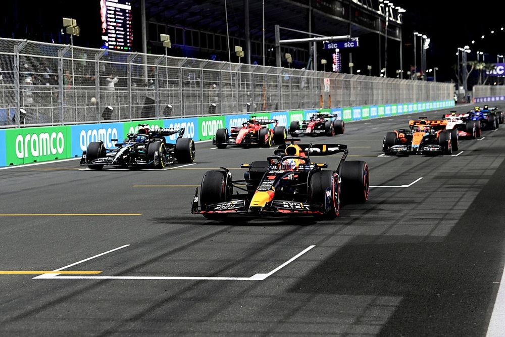

O Campeonato Mundial de Fórmula 1 da FIA de 2022 foi a 73ª temporada do Campeonato Mundial de Fórmula 1, que é
reconhecido pela Federação Internacional de Automobilismo (FIA), o órgão regulador do automobilismo
internacional, como a mais alta categoria de competição para carros de corrida monopostos. O campeonato foi
disputado em 22 etapas, tendo iniciado no Barém, em 20 de março, e terminado nos Emirados Árabes Unidos, em 20
de novembro. Nesta temporada ocorreu a estreia do Grande Prêmio de Miami, realizado no Autódromo Internacional
de Miami. Equipes e pilotos competiram para serem campeões mundiais de construtores e de pilotos,
respectivamente.

| Alfa Romeo F1 Team Orlen |
Alfa Romeo-Ferrari |
Guanyu Zhou e Valterri Bottas |
|
Scuderia AlphaTauri |
AlphaTauri-RBPT |
Pierre Gasly e Yuki Tsunoda |
|
BWT Alpine F1 Team |
Alpine-Renault |
Fernando Alonso e Esteban Ocon |
|
Aston Martin Aramco Cognizant F1 Team |
Aston Martin Aramco-Mercedes |
Sebastian Vettel, Lance Stroll e Nico Hulkenberg |
|
Scuderia Ferrari |
Ferrari |
Charles Leclerc e Carlos Sainz |
|
Haas F1 Team |
Haas-Ferrari |
Kevin Magnussen e Mick Schumacher |
|
McLaren F1 Team |
McLaren-Mercedes |
Daniel Ricciardo e Lando Norris |
|
Mercedes-AMG Petronas F1 Team |
Mercedes |
Lewis Hamilton e George Russell |
|
Oracle Red Bull Racing |
Red Bull Racing-RBPT |
Max Verstappen e Sergio Pérez |
|
Williams Racing |
Williams-Mercedes |
Nicholas Latifi e Alexander Albon e Nyck de Vries |
|
| Grande Prêmio do Barém |
Circuito Internacional do Barém, Sakhir |
1º – Charles Leclerc |
|
Grande Prêmio da Arábia Saudita |
Circuito Corniche de Gidá, Gidá |
1º – Max Verstappen |
|
Grande Prêmio da Austrália |
Circuito do Grande Prêmio de Melbourne, Melbourne |
1º – Charles Leclerc |
|
Grande Prêmio da Emília-Romanha |
Autódromo Enzo e Dino Ferrari, Ímola |
1º – Max Verstappen |
|
Grande Prêmio de Miami |
Autódromo Internacional de Miami, Miami Gardens |
1º – Max Verstappen |
|
Grande Prêmio da Espanha |
Circuito de Barcelona-Catalunha, Montmeló |
1º – Max Verstappen |
|
Grande Prêmio de Mônaco |
Circuito de Mônaco, Monte Carlo |
1º – Sergio Pérez |
|
Grande Prêmio do Azerbaijão |
Circuito Urbano de Bacu, Bacu |
1º – Max Verstappen |
|
Grande Prêmio do Canadá |
Circuito Gilles Villeneuve, Montreal |
1º – Max Verstappen |
|
Grande Prêmio da Grã-Bretanha |
Circuito de Silverstone, Silverstone |
1º – Carlos Sainz |
|
Grande Prêmio da Áustria |
Red Bull Ring, Spielberg |
1º – Charles Leclerc |
|
Grande Prêmio da França |
Circuito de Paul Ricard, Le Castellet |
1º – Max Verstappen |
|
Grande Prêmio da Hungria |
Hungaroring, Mogyoród |
1º – Max Verstappen |
|
Grande Prêmio da Bélgica |
Circuito de Spa-Francorchamps, Stavelot |
1º – Max Verstappen |
|
Grande Prêmio dos Países Baixos |
Circuito de Zandvoort, Zandvoort |
1º – Max Verstappen |
|
Grande Prêmio da Itália |
Autódromo Nacional de Monza, Monza |
1º – Max Verstappen |
|
Grande Prêmio de Singapura |
Circuito Urbano de Marina Bay, Singapura |
1º – Sergio Perez |
|
Grande Prêmio do Japão |
Curso Internacional de Corridas de Suzuka, Suzuka |
1º – Max Verstappen |
|
Grande Prêmio dos Estados Unidos |
Circuito das Américas, Austin |
1º – Max Verstappen |
|
Grande Prêmio da Cidade do México |
Autódromo Hermanos Rodríguez, Cidade do México |
1º – Max Verstappen |
|
Grande Prêmio de São Paulo |
Autódromo José Carlos Pace, São Paulo |
1º – George Russel |
|
Grande Prêmio de Abu Dhabi |
Circuito de Yas Marina, Abu Dhabi |
1º – Max Verstappen |
|
Em 9 de outubro de 2022, Max Verstappen venceu o Grande Prêmio do Japão em Suzuka, sagrando-se bicampeão mundial
de Fórmula 1.[3]
.jpg)

.jpg)